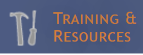

Information About Observing With NASA
Quick Links
What is Observing With NASA?
MicroObservatory is a network of telescopes all over America that you can control over the internet. MicroObservatory telescopes are called robotic telescopes because they use computers and machines, not humans, to point the telescope in the right direction and take pictures.

 The MicroObservatory and Observing with NASA website are part of NASA (National Aeronautics and Space Administration). This website was created so that everyone can use the telescopes to learn about astronomical objects.
The MicroObservatory and Observing with NASA website are part of NASA (National Aeronautics and Space Administration). This website was created so that everyone can use the telescopes to learn about astronomical objects.
How Do You Use Observing With NASA?
 Observing with NASA gives you different options for controlling telescope camera settings to improve your pictures, including field of view, exposure time, and filter selection.
Observing with NASA gives you different options for controlling telescope camera settings to improve your pictures, including field of view, exposure time, and filter selection.
Find an Image
The MicroObservatory Image Directory has great photos of astronomical objects taken with NASA cameras. To view and download the pictures, follow the three steps below:
- Search through the Object names to find an astronomical object to view.

- Click the Image Filename to open the picture.

- Click on the image link to download and save.

What Can You Photograph?
With Observing with NASA, you can look at pictures of the moon, the sun, and planets in our solar system. You can even take your own photos of the moon, sun, stars, and even objects that are much farther away including distant stars, nebulae, and galaxies.
How to Request an Image
 Click on the Control Telescope button. This web page shows you all the objects you can photograph with the Observing with NASA telescopes. Notice that it shows you which objects will be visible tonight from its telescopes (assuming it is not too cloudy).
Click on the Control Telescope button. This web page shows you all the objects you can photograph with the Observing with NASA telescopes. Notice that it shows you which objects will be visible tonight from its telescopes (assuming it is not too cloudy).- Click on the Observe button to take a picture of the moon.
- Make your Field of View selection, Exposure Time selection, and Make your Filter selection.
- Email your request and wait for your photo. NASA usually takes the photos at night when it is easier to view astronomical objects.


How to Access Your Image
When you get your email, you can follow the Access your image link to get the photograph you took with the telescope. Right-click on the image and select Save picture as… Then save the picture to your student folder. You can now complete your presentation.
Explore On Your Own
Additional resources and tutorials can be found by clicking on the Training & Resources tab.